Sommario
- libro:pag 35
- riassunto:inizio (1.2)
- PROCESSORI:
- organizzazione della cpu
- esecuzione dell’istruzione
- RISC vs CISC
- principi di progettazione dei calcolatori
- parallelismo a livello di istruzione
- parallelismo a livello di processore
- MEMORIA PRINCIPALE:
- Bit.
- Sistemi di numerazione
- indirizzi di memoria
- ordinamento dei byte
- codici di correzione di errore
- memoria cache
I PROCESSORI
CPU
- La CPU(Central Processing Unit) è il cervello del computer e sfruttando anche il bus esegue le istruzioni nei programmi della memoria principale
cosa contiene la cpu?
- CU, il vigile
- ALU, serve per fare semplici calcoli e sfrutta i registri
- Registri (piccole memorie ad alta velocità)
Nei registri della cpu abbiamo:
- program counter(PC)
- è un puntatore che punta all’indirizzo nella memoria centrale dell’istruzione successiva
- instruction register(IR)
- contiene l’istruzione che si sta eseguendo della memoria centrale
IR e PC prendono le informazioni dalla memoria centrale
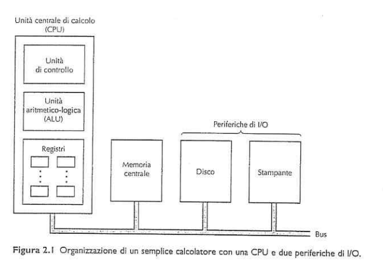 bus è una collezione di cavi paralleli per trasferire indirizzi bus dati bus controllo bus indirizzi
come è fatta la cpu?(Von Neumann)
- la CPU è fatta dalle cose prima e da un data path
come funziona il data path?
- hai da 1 a 32 registri
- A e B salvano le informazioni di due registri e li passano all’ALU a cui fa l’operazione e vanno in output e lo mette in un registro di output apposito che può essere poi immagazzinato in un registro della CPU
operazioni del data path:
- l’ALU oltre ad avere somme sottrazioni ecc… ha anche altre istruzioni ad esempio:
- istruzione registro-memoria(se A non è nel registro, non è mai stata usata allora significa che bisogna caricare l’informazione all’interno del registro e poi vengono usate)
- istruzione register-register(se A è già nel registro non serve che venga caricato dalla memoria principale e viene direttamente usato)
L'ALU per fare delle operazioni sui dati li prende per forza dai registri
esempio:
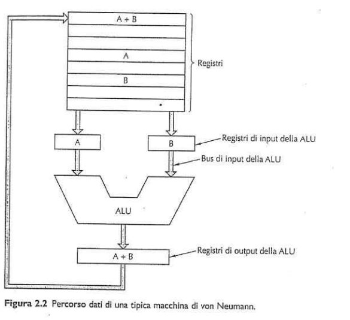
esecuzione delle istruzioni:
Si può chiamare anche fetch-decode-execute
La CPU esegue le istruzioni svolgendole in piccoli passi che principalmente si dividono così:
- prelevare dalla memoria centrale l’istruzione successiva(suggerita dal PC) e viene salvata nell’IR
- Aggiornamento del Program Counter con l’indirizzo dell’istruzione successiva
- capire il tipo di istruzione
- se l’istruzione richiede dei dati in memoria(parola) determinare dove si trova questo dato
- se serve mettere il dato nel registro della CPU
- eseguire l’istruzione
- tornare nel punto 1 così che si ripeta tutto
strategie di progettazione della CPU
abbiamo due filosofie:
- Architetture CISC abbiamo una cpu che capisce delle istruzioni più complesse senza l’uso di istruzioni di base che le compongono (lentamente)
- Architettura RISC abbiamo una cpu che capisce poche e semplici istruzioni(più veloci infatti basta un solo ciclo di data path!!)
utilizzo di entrambe
intel a partire dal x486 fece un mix tra risc e cisc
se vuoi progettare la tua cpu devi
- Far eseguire tutte le istruzioni direttamente dall’hardware, se hai istruzioni per le architetture CISC le dividi in piccole istruzioni primitive
- Utilizzo del parallelismo per eseguire più istruzioni nello stesso tempo
- Le istruzioni devono essere facili da decodificare, con istruzioni regolari, di lunghezza fissa e con poche tipologie
- solo le istruzioni LOAD E STORE hanno accesso alla memoria,LOAD preleva STORE salva
- più registri(almeno 35)=più informazioni rapide da consultare
PARALLELISMO
Il clock è il numero totale di cicli in un secondo, oggi abbiamo raggiunto un limite di clock, per aumentare la velocità delle istruzioni ci viene incontro il parallelismo che si divide in due tipi
tipi di parallelismo:
- a livello di istruzione
- quando esegui operazioni indipendenti, simultaneamente
- a livello di processore
- quando più CPU lavorano per risolvere lo stesso problema
Prefetching
I calcolatori sono stati progettati con la capacità di prendere le istruzioni in memoria prima che esse vengano eseguite nel buffer di prefetch. In pratica il Prefetching era diviso in due parti
- prelievo dell’istruzione
- esecuzione dell’istruzione
Fetch=prelievo di memoria
Pipelining
è una strategia che divide un’istruzione in piccoli passaggi che vengono eseguite da unità hardware dedicate 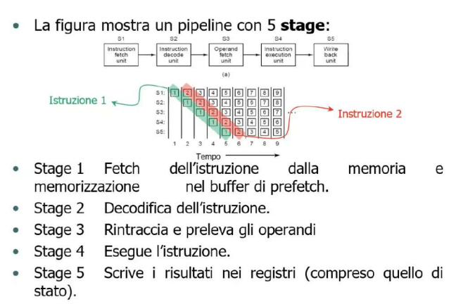 Il pipeline rende la latenza più bilanciata calcoli vari con MIPS T E s
Processori con più pipeline
con il pipeline in base a quanto parallelismo faccio ottimizzo i tempi se hai due pipeline raddoppi la latenza di emissione poi si fecero più processori con più pipeline 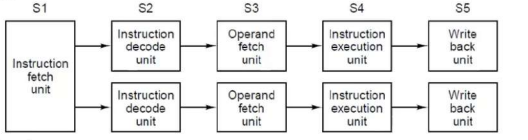
- add pass access page on obsidian
Architetture superscalari
Utilizzare più di due pipeline in parallelo comporterebbe un’aumento eccessivo dell’hardware perciò si arrivò a una soluzione differente Ovvero quella di dividere lo stato 4(di esecuzione) in istruzioni che verranno eseguite contemporaneamente mentre prima venivano eseguite(le stesse istruzioni) contemporaneamente ovviamente s3 deve riuscire ad inviare contemporaneamente i dati a s4 in modo praticamente simultaneo 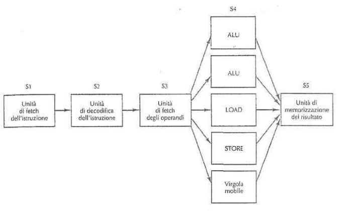
Parallelismo a livello di processore
un aumento di processori comporta un fattore di miglioramento ma non troppo elevato, per ottenere un incremento di 50 100 bisogna progettare sistemi con molte cpu
Ci sono tre differenti approcci per il parallelismo a livello di processore:
Computer con parallelismo sui dati
Funziona basandosi sull’ottimizzazione della gestione dei dati
Classificazione di Flynn
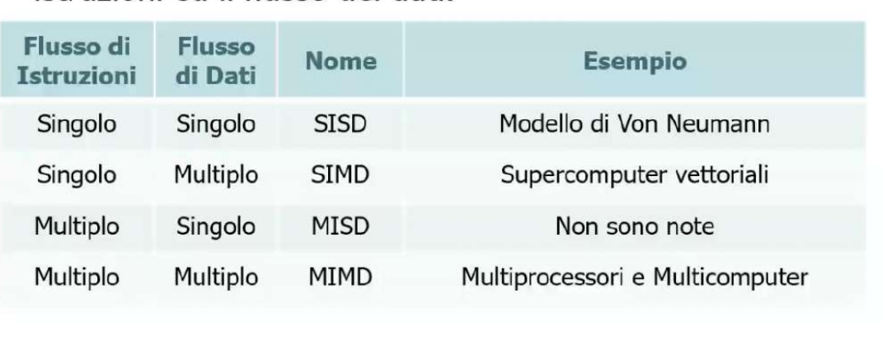
- Processori SIMD: sono costituiti da un vasto numero di processori identici che svolgono le stesse istruzioni su dati differenti(super computer vettoriali)
- Processori vettoriali: esegue le stesse operazioni su 2 dati differenti (registri) con un unico sommatore
multi processori
segue la tecnica di mettere più cpu che condividono una memoria in comune e che siano sincronizzati nel farlo e sono dette fortemente accoppiate (tightly coupled) sono senza memoria locale
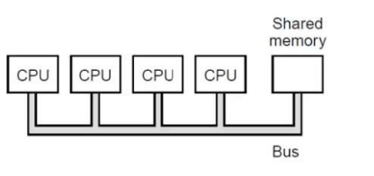
Sono abbastanza irrealizzabili da fare perché uno dovrebbe collegare ogni CPU solo da una memoria condivisa, perciò progettarono i multi computer
multi computer
Se io mettessi una memoria locale per ogni CPU ottimizzo alcuni processi che possono svolgere singolarmente le CPU senza dover scrivere sempre tutto nella memoria condivisa con memoria locale 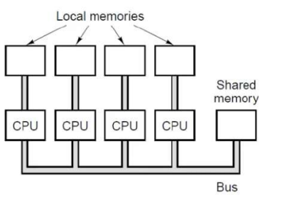
memoria principale
- serve per memorizzare software e dati
- l’unità della memoria è il bit una variabile che assume due stati 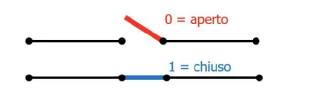
sistemi di enumerazione
Servono per rappresentare i numeri possono essere scritte in diverse basi perché in base 16 vengono usate le lettere? perché venivano usati nella macchina da scrivere
vedi gli appunti di logica sul binario Cap6-logica
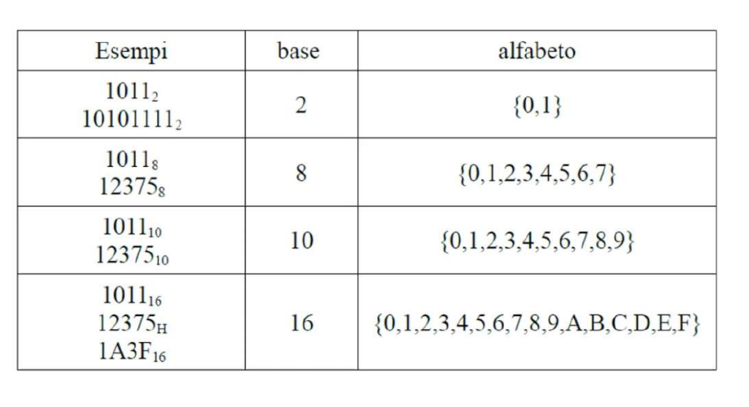
Conversioni da altro a binario
base 4 prendi le informazioni in 2 blocchi base 8 dividi in 3 blocchi base 16 dividi in 4 blocchi e così via
indirizzi di memoria
Una predefinita quantità di bit indica un indirizzo in una cella di memoria 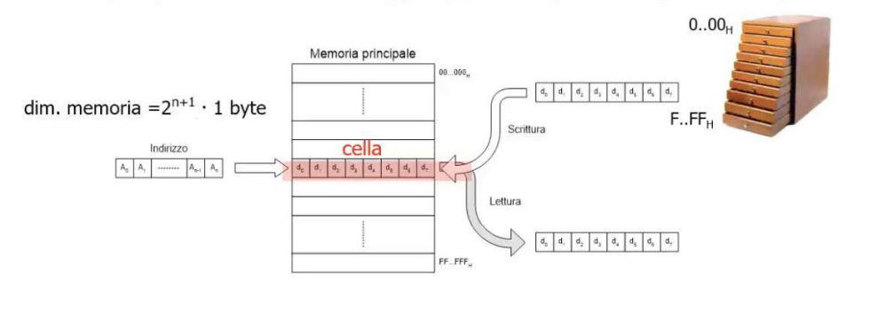
ordinamento dei byte
i byte in una parola possono essere scritte da sinistra a destra big endian o al contrario little endian 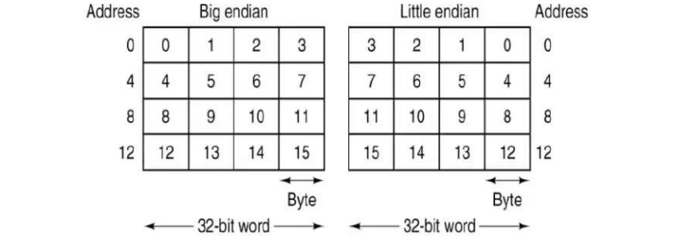
codici di correzione
Quando le memorie dei calcolatori commettono degli errori per proteggersi da tali errori bisogna registrarli, le memorie usano dei codici di rilevazione e/o di correzione degli errori che si aggiungono alla normale informazione ad esempio abbiamo n,m e r dove n=lunghezza della parola m=bit normali r=bit di controllo questa si chiama (Codeword)
parola=insieme di dati e informazioni in bit ad esempio
Vedi il libro di esercizi su codice di hamming
memorie cache
Devo leggere i dati dalla memoria principale ma è un pò lentina se usassi sempre la memoria principale si creerebbe del bottleneck si decise di creare così una memoria a tampone di poche dimensioni con dei tempi di accesso veloci, dove vengono salvate le informazioni più utilizzate. esempio: Sto facendo un ordinamento se gli elementi me li trovo in memoria a tampone e non nella memoria principale gli step successivi saranno facilitati nel confrontare le informazioni Quando la CPU necessità di una determinata parola la cerca subito nella cache e poi la cerca in memoria centrale
I principi
- principio di località spaziale: dice che se hai usato una informazione A è molto probabile che userai delle informazioni vicino ad A
- principio di località temporale: temporalmente parlando se stai accedendo alle informazioni di A molto probabilmente nel corso del tempo userai cose nelle zone di A
esempio stupido:
se stai vedendo una foto nella cartella comunioni probabilmente ne scorrerai un’altra e probabilmente rimarrai temporalmente nella cartella FOTO COMUNIONI
Gerarchie di memoria
I processori più recenti hanno diversi livelli di memoria che hanno dei compiti 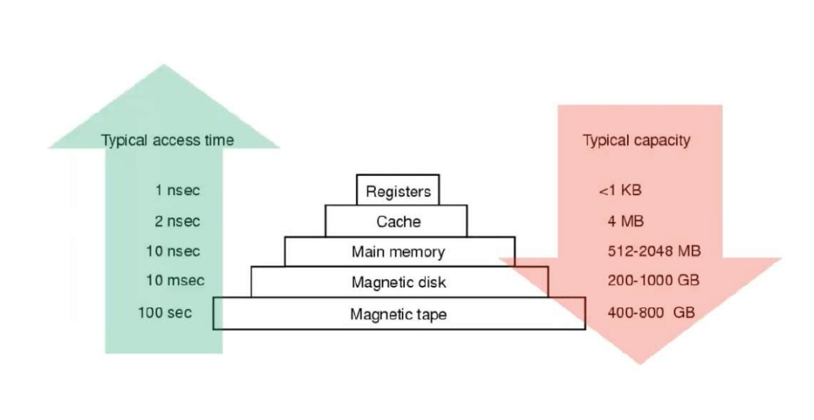
Tipi di memoria
sono banchi di diverse dimensioni hanno un indirizzamento di memoria e attraverso l’indirizzamento arriviamo al contenuto stesso. Si dividono in due tipi:
- SIMM: ha una riga di connettori su un solo lato
- DIMM: ha due righe di connettori(doppia faccia) e sono il doppio più potenti delle SIMM 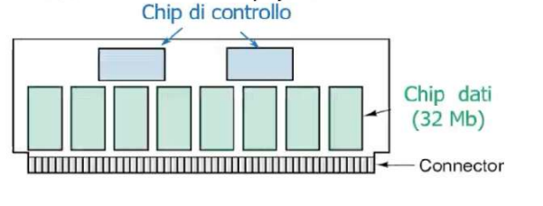 riferimento libro: pag(51) riassunto:2 pag(14)